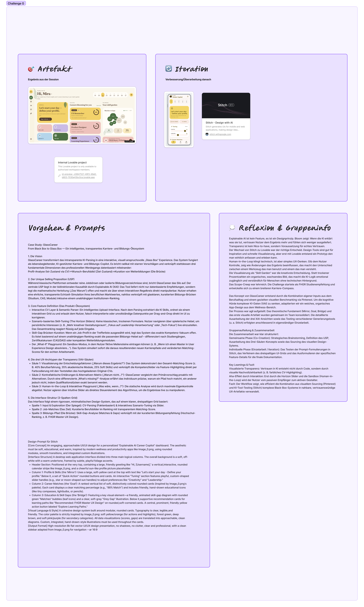

Artefakt
GlassCareer — Transparentes KI-Karriere-Ökosystem
GlassCareer transformiert das intransparente KI-Parsing in eine interaktive, visuell anspruchsvolle "Glass Box" Experience. Das System fungiert als lebenslanger, KI-gestützter Karriere- und Bildungs-Copilot — und macht die mathematische Entscheidung "Das Warum" offen und nachvollziehbar.

Die 3 XAI-Prinzipien
Skill Garden
Visualisierung der Entscheidungslogik als "Skill Garden" — macht den Unterschied zwischen dem was man hat und dem was man braucht sichtbar.
Alternativen-Matrix
Kontrafaktische Erklärungen zeigen: "Warum nicht...?" — differenziert, präzise, mit echten Verbesserungsvorschlägen statt generischen Absagen.
Human-in-the-Loop
Horizon Slider und Sandbox erlauben aktive Kontrolle — Nutzer navigieren intuitive Hebel als direktes Steuerungselement des Algorithmus.
Iteration
Von Stitch zu Lovable
Der Prozess war agil aufgebaut: Das theoretische Fundament (Mirror, Goal, Bridge) und das erste visuelle Artefakt wurden gemeinsam im Team konsolidiert. Die detaillierte Ausarbeitung der drei XAI-Abschnitte sowie das Testing verschiedener Generierungstools (Stitch, Lovable) erfolgten anschliessend eigenständig.
Stitch — Design First
Google Stitch für initiales UI-Design und schnelle Visualisierung. Testen der Prompt-Formulierungen, Verfeinern des dreispaltigen UI-Grids.
Lovable — Finale Umsetzung
Lovable für die funktionierende App. Ausformulieren der spezifischen Feature-Details — von der Skizze zum klickbaren Prototyp.
Reflexion
Learnings
Explainable AI ist kein Feature — es ist ein Designprinzip. Wenn die KI erklärt was sie tut, vertrauen Nutzer dem Ergebnis mehr und fühlen sich weniger ausgeliefert. Transparenz ist nicht Nice-to-have, sondern Voraussetzung für echtes Vertrauen.
Der Wechsel von Stitch zu Lovable war der richtige Entscheid — Design-Tools sind gut für Inspiration, aber erst mit Lovable entstand ein Prototyp den man wirklich anfassen und erleben kann.
Human-in-the-Loop klingt technisch, ist aber simples UX-Denken: Gib dem Nutzer Kontrolle, zeig wie Änderungen das Ergebnis beeinflussen — das macht den Unterschied zwischen einem Werkzeug das man benutzt und einem das man versteht.
Das Scope-Creep war lehrreich: Die Challenge startete als FHGR Studienempfehlung und entwickelte sich zu einem breiteren Karriere-Compass. KI-Projekte wachsen schnell wenn man anfängt zu experimentieren — klare Grenzen setzen ist wichtig.
Gruppeninfo